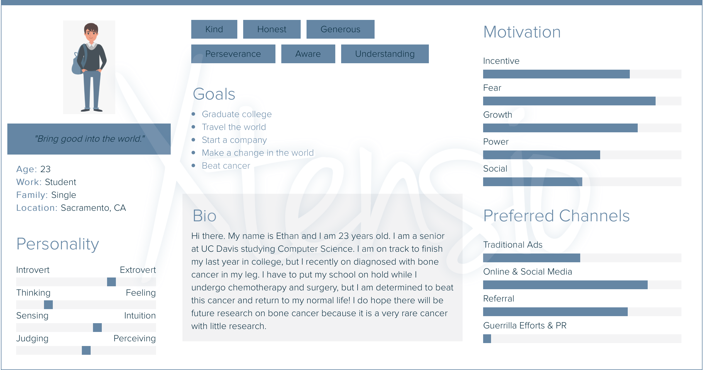
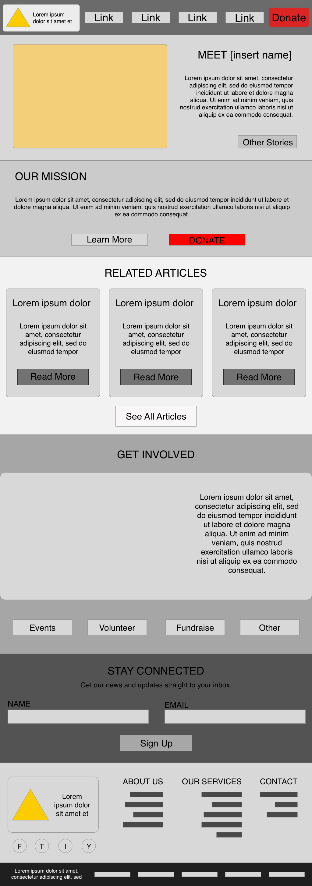
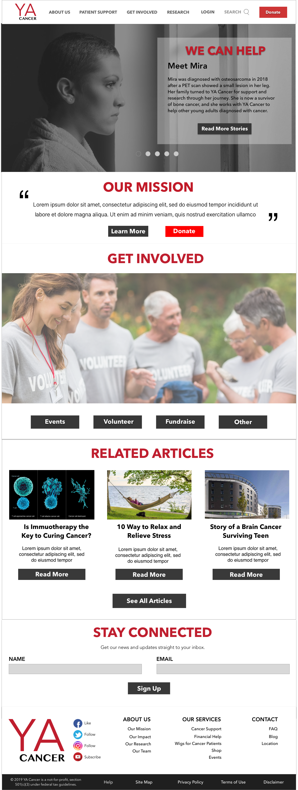
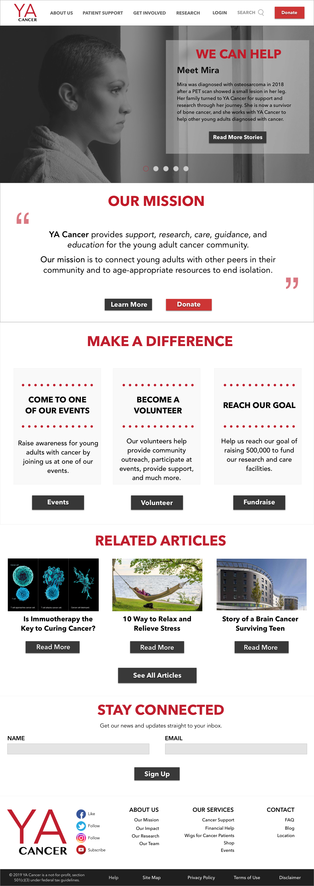
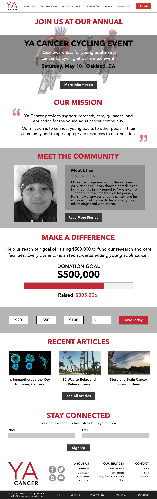

Project Type
Final Project for DES 112
Role
UX/UI Designer
Skills
User Research, Emotional Design, Prototypes, Wireframes, Usability Principles
Tools
Sketch
Timeline
Apr. 15 - May 6, 2019
(3 weeks)
Final Project for DES 112
UX/UI Designer
User Research, Emotional Design, Prototypes, Wireframes, Usability Principles
Sketch
Apr. 15 - May 6, 2019
(3 weeks)
This project was for my UX/UI course at UC Davis. The requirement was to design a desktop version of the front page for an informational website within your assigned category (health care, non-profit, political candidate, school or educational program or museum). My category was for a non-profit organization, so I chose to design my own organization called YA Cancer. When I was researching non-profits, I found very few organizations that targeted young adults who got cancer because the majority of it focused on adults or children. My idea was to create an organization that young adults and teens could go to for information, support, or guidance on how to cope with cancer.
There are limited resources for young adults who are diagnosed with cancer. Many are beginning their journey as an adult with a job or education, and they may need assistance in navigating through this battle in their life.
Create a webpage for a non-profit organization targeting young adults. It will provide stories from other young adults with cancer, news, events for the organization, and how to cope with cancer.
Since I was assigned non-profit organization, I proposed to create a webpage that provides research and support for young adults with cancer. It will assist young adults diagnosed with cancer by creating a place for them to go to in times of need. The website will include a section on stories from other cancer patients and survivors to share with others, and they can connect to these people for questions or comments. The webpage will also include a section on recent news and/or tips for cancer patients and their families to read. It will be a place where young adults can come to for
Target Audience: Male and female young adults (between the ages of 18-35) who have been diagnosed with any type of cancer
I looked at other non-profit organization's websites to see what type of content they featured on the front page, and I wanted to understand how to apply design elements and patterns to a website by looking at examples. The sites I looked at are:
The webpage for American Red Cross was very clean, but I thought that the page did not give much information on the purpose of the website because it would link to different sections of the website rather than providing a brief overview of each section on the front page.
I thought the American Heart Association webpage was cohesive and it flowed from one section to the next. The provided a good amount of content and resources that are helpful to the audience as they visit the website. However, there did seem to be a large amount of information spread out on the page, so some design changes to type and spacing would make it better.
The American Cancer Association website was informative and engaging because it used emotional design principles to help the user navigate. I found the amount of information and content to be very fitting for the site and organization. I especially liked the "Generosity" section on the webpage because it gave statistics and visuals for users to donate.
I found the Bill and Melinda Gates Foundation webpage had the best interface because it had minimal clutter with the information spread out. It was also very user friendly because it allowed the user to change to six other different languages. The navigation was also hidden from view which made the main content stand out without distractions of the links.
The Make-A-Wish Foundation website was simple and understandable, but I did not think it followed the mission of the organization. Almost every section on the main page had some correlation with donating to Make-A-Wish, and it became repetitive when scrolling down the website.
I created a persona for my target audience with Xtensio. The persona is on a student named Ethan who was recently diagnosed with cancer. He only has one year of college left, but he has to postpone his education for his treatment. This is potentially one of the audiences who will be looking at YA Cancer, so I have to consider his goals and needs when he is on the site.

I used Sketch to design the layout of the webpage. I first created a basic wireframe of the front page on the website. The top would have the logo and navigation, and the first section would be a story from a cancer patient. It would then state the mission of the organization followed by news articles to learn. I added a get involved section for the audience to help within the organization, and it then ends with an email subscription and footer. I only contains minimal words with the majority being filler text. There are no color or graphics added into the webpage in this version.

The initial design is similar to the layout in the wireframe. I used stock images as a placeholder for the first design, and I put in additional text for the site. The top tells the story about Mira to connect her story to others. If it were a functional webpage, it would continue to slide through more stories from other patients after Mira. The second part is the mission of the organization with filler text, and the "Get Involved" section has buttons for the user to click on to participate. The last main section is the articles for the user to learn about updates in cancer research, tips, and stories.

Critique: The "Get Involved" section does not engage the user to go further into the website, and the articles do not need a summary. Keep the design consistent with color and alignment.
For the second iteration, I considered the feedback I got from my instructor and peers, and I redesigned the "Get Involved" section along with minor changes in other sections. I broke the events, volunteer, and fundraise down into their own sections, and I gave an explanation for each. I added the mission into the section, and I removed the article summaries.

Critique: There does not need to be a second donate button, and the "Related Articles" section does not need four buttons. The footer does not need the social media name next to the buttons, and the "Get Involved" section could be pushed further to engage the audience.
For the final version, I redesigned the event, donate, and personal stories sections. I decided to break down the "Get Involved" section even more by creating a separate section for the event. The event draws the audience into the site, and it gives more context for the user to understand. I kept the mission statement the same as the previous iteration. I decided to add the "Meet the Community" section beneath the mission, but I made the background gray to bring more attention to the section. I made the story more personal by adding an image of the person, and I added the location of where they are from. The "Donate" section was expanded to show the goal and donation options. I wanted to show that their donations make a difference in the organization, and I layed out the donations they could give below it for easy access. The "Articles" section was simplified to show the three featured articles and a read more button. The footer was changed to be more aligned, and I changed the social media icons to fit the branding of the organization.

This was my first time in the UX/UI role, and I was able to create a realistic website design for my organization. I enjoyed the process of showing my designs to others and getting feedback on it because it helped me see changes that I didn't see at first. I was able to practice design patterns to engage the user, and learn important usability principles that make up a website.
To improve the design, I would focus more on the design aspect of the website like the typography and color scheme. The logo could be further improved on as well. I would also like to build this website with HTML, CSS, and JavaScript.